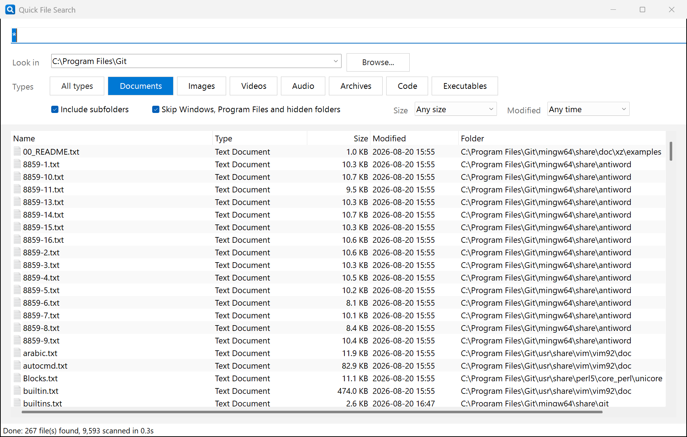

Find any file on your computer by name and basic type. One small exe, nothing to install, results stream in as it scans.
Windows 10 / 11, 64-bit. About 50 KB. All releases

All drives, a single drive, Desktop, Documents, Downloads, or any folder you pick.
Documents, Images, Videos, Audio, Archives, Code, Executables. Toggle any mix, or search everything.
report finds every file with "report" in the name. *.pdf and inv??ce* work too.
Only files over 10 MB, only files changed in the last 7 days, and so on.
Matches appear while the scan is still running. Stop at any time. Sort by any column.
Double-click to open a file. Right-click to open its folder or copy the full path.
QuickFileSearch.exe and run it. There is no installer.Written in PowerShell with Windows Forms, so it runs on every Windows 10 and 11 machine with nothing extra installed. The exe is produced with ps2exe by GitHub Actions on every tagged release. Scanning runs on a background thread, so the window stays responsive. Settings are remembered between runs.